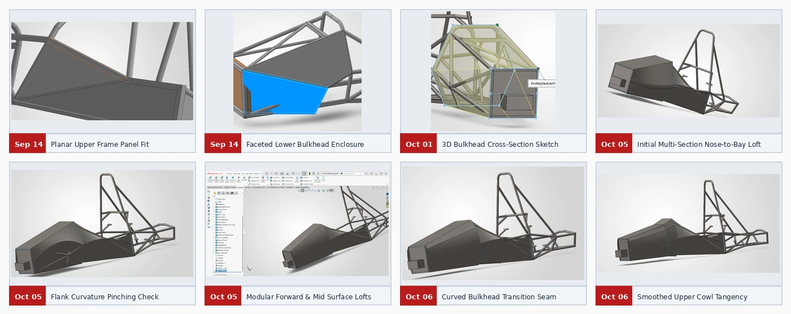
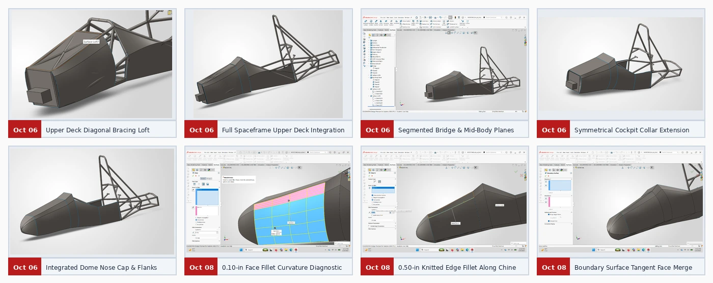
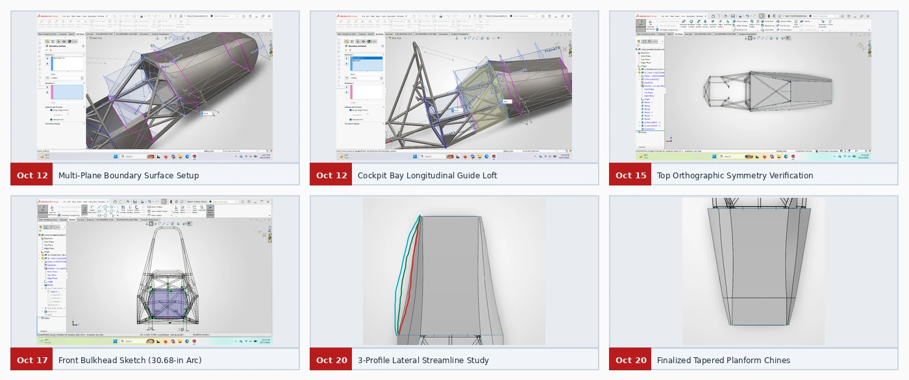
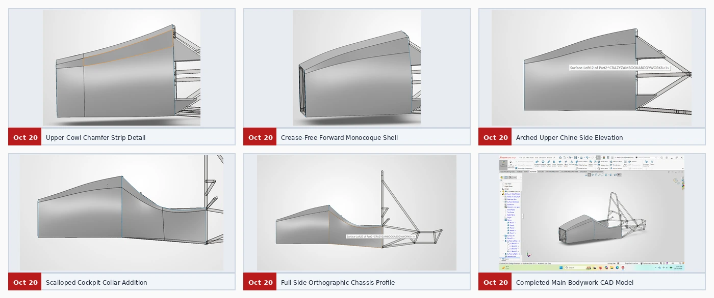

Bodywork
The main shell bridges the rectangular front bulkhead and the wider cockpit bay. Its surfaces follow the tubular spaceframe while leaving room for suspension and steering hardware.
Development timeline
From panels to lofts
Early flat panels gave way to a multi-section loft. Splitting the forward and middle surfaces and curving the bulkhead seams removed X-shaped pinching on the flanks.
Blend the upper deck
A dedicated deck bridged the diagonal chassis bracing. A 0.10-in fillet served as a diagnostic. Knitting adjacent surfaces enabled a 0.50-in edge fillet, and tangent boundary surfaces smoothed the nose-to-body junction.
Check the envelope
Eleven reference planes controlled the shape along the chassis. Orthographic views checked symmetry and clearances. Three planform curves informed the final taper and cockpit collar.
Design figures








The October 20 bodywork is the CAD baseline for the next full aero package.
Next case study → Nosecone